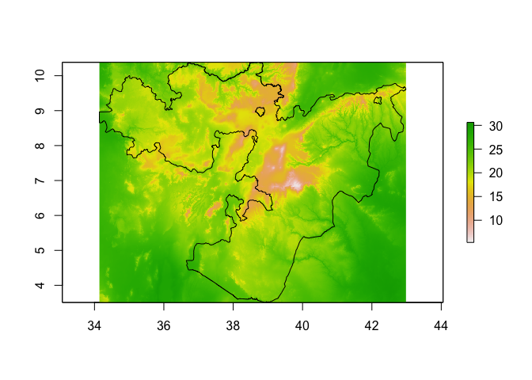
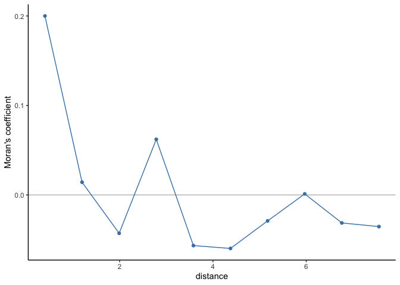
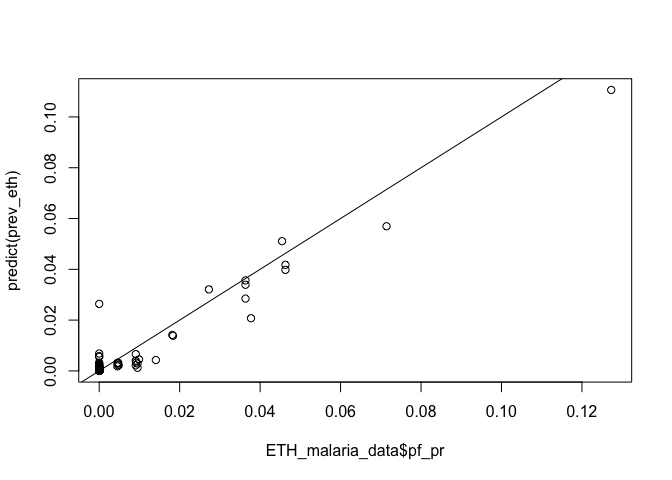
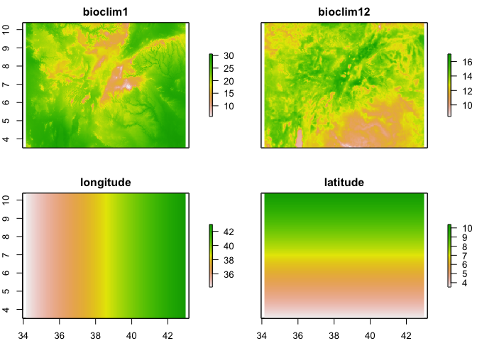
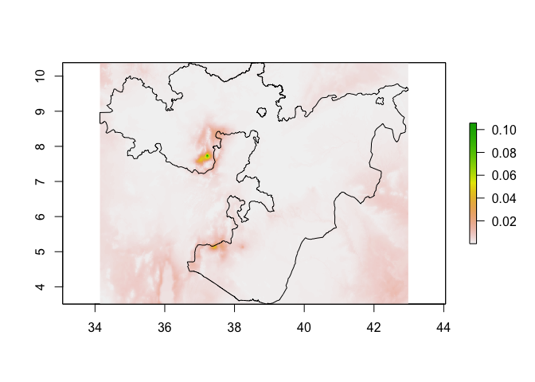

Week 6 - Spatial Regression
In this session we will introduce some concepts of spatial regression. We will focus on continuous spatial variation and see how to include it in a regression model. We will also discuss model selection using cross validation. The session is divided into the following sections:
- Linear Regression Models
- Spatial Covariance
- Geostatistics
- Cross-Validation
- Application Example: Malaria Case
Besides the code displayed here, we will use some additional code to generate some toy datasets that will help illustrate the exposition. Before starting we will load these code as well as the other required libraries, including ggplot2 which will be used for creating most of the images displayed.
library(ggplot2)
library(fields)
## Loading required package: spam
## Spam version 2.8-0 (2022-01-05) is loaded.
## Type 'help( Spam)' or 'demo( spam)' for a short introduction
## and overview of this package.
## Help for individual functions is also obtained by adding the
## suffix '.spam' to the function name, e.g. 'help( chol.spam)'.
##
## Attaching package: 'spam'
## The following objects are masked from 'package:base':
##
## backsolve, forwardsolve
## Loading required package: viridis
## Loading required package: viridisLite
##
## Try help(fields) to get started.
library(raster)
## Loading required package: sp
library(sp)
library(spaMM)
## Registered S3 methods overwritten by 'registry':
## method from
## print.registry_field proxy
## print.registry_entry proxy
## spaMM (Rousset & Ferdy, 2014, version 3.11.3) is loaded.
## Type 'help(spaMM)' for a short introduction,
## 'news(package='spaMM')' for news,
## and 'citation('spaMM')' for proper citation.
## Further infos, slides, etc. at https://gitlab.mbb.univ-montp2.fr/francois/spamm-ref.
##
## Attaching package: 'spaMM'
## The following object is masked from 'package:fields':
##
## Matern
source("https://raw.githubusercontent.com/HughSt/HughSt.github.io/master/course_materials/week6/Lab_files/R%20Files/background_functions.R")
Linear Regression Models
Univariate Linear Model
As a first step we will do a recap on a linear regression model. In this problem we have a set of measurements of two variables, say \(X\) and \(Y\), and we try to explain the values of \(Y\) based on the values on \(X\). To do this we find the line that is the closest to all the points \((x, y)\).
The command below generates a toy dataset that we will use as an example.
# Generate example data
dset1 <- univariate_lm()
# Show data
head(dset1)
## x y
## 1 -0.38813740 -8.005137
## 2 0.01616137 -7.917746
## 3 0.40175907 -7.892104
## 4 0.54888497 -8.061714
## 5 0.97495187 -7.694279
## 6 1.05565842 -7.741698
In R we can fit a linear model and make predictions with the comands shown next.
# Fit linear model on dataset 1
m1 <- lm(y ~ x, data = dset1)
m1_pred <- predict(m1, newdata = dset1, interval = "confidence")
dset1$y_hat <- m1_pred[,1]
dset1$y_lwr <- m1_pred[,2]
dset1$y_upr <- m1_pred[,3]
Univariate GLM
While very useful, it is common that the model above turns out to be a not good assumption. Think of the case where \(Y\) is constrained to be positive. A straight line, unless it is horizontal, will cross the \(y\)-axis at some point. If the values of \(X\) where \(Y\) becomes negative are rare or they are a set of values we are not interested in, we may simply ignore them, however there are scenarios where we cannot afford having impossible values for \(Y\).
As an example, we will load a second toy dataset and fit a liner regression model. Look at the bottom left corner of figure below. The predictions of \(Y\) are starting to cross the zero value and become negative, but the observed data remain positive.
# Fit linear model on dataset 2
dset2 <- univariate_glm()
m2 <- lm(y ~ x, data = dset2)
m2_pred <- predict(m2, newdata = dset1, interval = "confidence")
dset2$y_hat <- m2_pred[,1]
dset2$y_lwr <- m2_pred[,2]
dset2$y_upr <- m2_pred[,3]
ggplot(data=subset(dset2), aes(x, y)) +
geom_point(col="steelblue", size=2) +
geom_line(aes(x, y_hat), col="red") +
geom_ribbon(aes(ymin=y_lwr, ymax=y_upr), fill="magenta", alpha=.25) +
theme(panel.grid.major = element_blank(), panel.grid.minor = element_blank(),
panel.background = element_blank(), axis.line = element_line(colour = "black"))
A solution to this problem is to use generalized linear models (GLM).
A GLM uses a transformation on \(Y\) where the assumptions of the
standard linear regression are valid (figure below), then it goes back
to the original scale of \(Y\) and makes predictions.

When fitting a GLM to the dataset shown in the second example above, the resulting predictions draw a curve that never reaches zero.
GLM with Spatially Structured Data
We will now move to a example of regression on spatial data. Say that we have a parcel of land where we are interested in quantifying the amount of organic matter. We take measurments at different locations randomly chosen, so that the locations can be any set of points in the parcel. We will also assume that there is a covariate \(X\), say humidity, measured at the same locations.
The code below generates the data for this example and the figure shows such data. We are assuming that the organic matter is measuered in a fictitious scale where the unit is OM.
# load toy dataset for example
spatial_reg <- soil_data(n_peaks=3, n_data = 300, seed=0)
head(spatial_reg)
## lng lat humidity OM
## 1 357.78218 370.77231 1.6951691 205.56831
## 2 105.93796 268.81118 1.8340258 221.05495
## 3 148.47744 37.84828 0.9823934 167.15905
## 4 228.56849 196.54585 0.8873421 101.62076
## 5 362.37491 184.15918 -0.8146412 73.02679
## 6 80.47109 149.71140 -0.3820763 65.79837
The plot below shows the organic matter vs humidity. Notice that the values of organic matter are positive and that they become more spread the larger the values of humidity.
If we transform the organic matter values with the logarithm, we get a clear linear relation with the values of humidity (see figure below). This resembles a perfect straight line, because this is a toy example designed this way. Things are less clear in reality, but the principles shown here can still be applied to it.
In this case we will fit a GLM using the logarithm as link function. The model is described as
\(log(y_i) = \eta_i = \beta_0 + \beta_1 x_i\),
where \(y_i\) is the amount of organic matter, \(x_i\) is the humidity level, and $\beta_0$ and \(\beta_1\) are parameters. To fit this model we can use the following command.
# Fit GLM to toy dataset
m3 <- glm(OM ~ humidity, data=spatial_reg, family=gaussian(link="log"))
summary(m3)
##
## Call:
## glm(formula = OM ~ humidity, family = gaussian(link = "log"),
## data = spatial_reg)
##
## Deviance Residuals:
## Min 1Q Median 3Q Max
## -69.974 -14.630 -4.598 10.982 101.743
##
## Coefficients:
## Estimate Std. Error t value Pr(>|t|)
## (Intercept) 4.43623 0.02176 203.83 <2e-16 ***
## humidity 0.50586 0.01662 30.44 <2e-16 ***
## ---
## Signif. codes: 0 '***' 0.001 '**' 0.01 '*' 0.05 '.' 0.1 ' ' 1
##
## (Dispersion parameter for gaussian family taken to be 674.2259)
##
## Null deviance: 918485 on 299 degrees of freedom
## Residual deviance: 200919 on 298 degrees of freedom
## AIC: 2809.4
##
## Number of Fisher Scoring iterations: 4
Once we have our GLM fitted, we can analyze the residuals to check if the assumption of them being independent and identically distributed is valid. In the figure below it seems that the values of the residuals are spatially related.
We will make a more objective assesment of the residual’s independence with Moran’s coefficient. The figure displayed below is a spatial autocorrelogram shows that there is spatial autocorrelation and therefore that the residuals are not independent.
# Compute correlogram of the residuals
nbc <- 10
cor_r <- pgirmess::correlog(coords=spatial_reg[,c("lng", "lat")],
z=spatial_reg$residuals,
method="Moran", nbclass=nbc)
correlograms <- as.data.frame(cor_r)
correlograms$variable <- "residuals_glm"
# Plot correlogram
ggplot(subset(correlograms, variable=="residuals_glm"), aes(dist.class, coef)) +
geom_hline(yintercept = 0, col="grey") +
geom_line(col="steelblue") +
geom_point(col="steelblue") +
xlab("distance") +
ylab("Moran's coefficient")+
theme(panel.grid.major = element_blank(), panel.grid.minor = element_blank(),
panel.background = element_blank(), axis.line = element_line(colour = "black"))
An approach to account for the spatial structure could be to include the GPS coordinates as covariates in the model. For example
\(\eta_i = \beta_0 + \beta_1 x_i + \beta_2 s_{[i,1]} + \beta_3 s_{[i,2]}\),
where \((s_{[i,1]}, s_{[i,2]})\) are the longitude and latitude coordinates where each measurment was taken.
Having a trend across the surface may seem like a good idea, but it is not the best approach; and sometimes it is not even a good approach. First of all, the assumption of a surface trend may be to rigid. A polynomial fit, while more flexible, may still be too rigid or overfit the data. In any case we would need to decide which polynomial to use among all possibilities. For example
\(\eta_i = \beta_0 + \beta_1 x_i + \beta_2 s_{[i,1]} + \beta_3 s_{[i,2]} + \beta_4 s_{[i,1]} s_{[i,2]}\),
\(\eta_i = \beta_0 + \beta_1 x_i + \beta_2 s_{[i,1]} + \beta_3 s_{[i,2]} + \beta_4 s_{[i,1]} s_{[i,2]} + \beta_5 s_{[i,1]}^2 + \beta_6 s_{[i,2]}^2\),
etc…
Spatial Covariance
The core idea behind Spatial Statistics is to understand an characterize this spatial dependence that is observed in different processes, for example: amount of rainfall, global temperature, air pollution, etc. Spatial Statistics deal with problems were nearby things are expected to be more alike.
When want to measure how much two variables change together, we use the covariance function. Under the right assumptions, we can also use the covariance function to describe the similarity of the observed values based on their location.
A covariance function K :‚ÄÑùïä‚ÄÖ√ó‚ÄÖùïä‚ÄÑ‚Üí‚ÄÑ‚Ñù maps a pair of points
z<sub>{=html}1</sub>{=html} = (s<sub>{=html}\(1, 1\)</sub>{=html}, s<sub>{=html}\(1, 2\)</sub>{=html})
and
z<sub>{=html}2</sub>{=html} = (s<sub>{=html}\(2, 1\)</sub>{=html}, s<sub>{=html}\(2, 2\)</sub>{=html})
to the real line. We can define such a function in terms of the distance
between a pair of points. Let the distance between the points be given
by
r = ∥z<sub>{=html}1</sub>{=html} − z<sub>{=html}2</sub>{=html}∥,
the following are examples of covarinace functions:
Exponentiated Quadratic:
K(z<sub>{=html}1</sub>{=html}, z<sub>{=html}2</sub>{=html})=σ<sup>{=html}2</sup>{=html}exp(−r<sup>{=html}2</sup>{=html}/ρ<sup>{=html}2</sup>{=html})
Rational Quadratic:
K(z<sub>{=html}1</sub>{=html}, z<sub>{=html}2</sub>{=html})=σ<sup>{=html}2</sup>{=html}(1 + r<sup>{=html}2</sup>{=html}/(2*α**ρ<sup>{=html}2</sup>{=html}))<sup>{=html}−α*</sup>{=html}
Matern Covariance:
K(z<sub>{=html}1</sub>{=html}, z<sub>{=html}2</sub>{=html})=œÉ<sup>{=html}2</sup>{=html}2<sup>{=html}1‚ÄÖ‚àí‚ÄÖŒΩ</sup>{=html}/Œì(ŒΩ)((2ŒΩ)<sup>{=html}.5</sup>{=html}r/œÅ)<sup>{=html}ŒΩ</sup>{=html}ùí¶<sub>{=html}ŒΩ</sub>{=html}((2ŒΩ)<sup>{=html}.5</sup>{=html}r/œÅ)
The quantities ρ,α,ν are parameters of the functions mentioned
and ùí¶<sub>{=html}ŒΩ</sub>{=html} is the modified Bessel function of
second kind. In the three cases, while less clear in the Matern case,
the covariance decreases asymptotically towards zero the larger the
value of r. This is the more distance between a pair of points, the
weaker the covariance between them.
The election of which covariance function to use depends on our assumptions about the change in the association between the points across space (eg., the speed of decay).
Geostatistics
Now that we have discussed how the covariance function can help model spatial dependence, we can discuss how to incorporate this ideas into our model. In our GLM example above we fitted a model of the form
\(\eta_i = \beta_0 + \beta_1 x_i\),
Now we will incorporate an spatial component as
\(\eta_i = \beta_0 + \beta_1 x_i + f(z_i)\), where (\(f(z_1), \ldots , f(z_2)\)) is a multivariate Gaussian with spatial covariance \(K\).
We can implement this model, assuming a Matern covariance, as shown below.
# Fit GAM with spatial smooth
m4 <- spaMM::fitme(OM ~ humidity + Matern(1|lng+lat), data=spatial_reg, family=gaussian(link="log"), init=list(lambda=.5, phi=.5))
summary(m4)
## formula: OM ~ humidity + Matern(1 | lng + lat)
## Estimation of corrPars, lambda and phi by Laplace ML approximation (p_v).
## Estimation of fixed effects by Laplace ML approximation (p_v).
## Estimation of lambda and phi by 'outer' ML, maximizing p_v.
## family: gaussian( link = log )
## ------------ Fixed effects (beta) ------------
## Estimate Cond. SE t-value
## (Intercept) 4.3187 0.092594 46.64
## humidity 0.5047 0.008029 62.87
## --------------- Random effects ---------------
## Family: gaussian( link = identity )
## --- Correlation parameters:
## 1.nu 1.rho
## 0.234445951 0.004405115
## --- Variance parameters ('lambda'):
## lambda = var(u) for u ~ Gaussian;
## lng + lat : 0.04179
## # of obs: 300; # of groups: lng + lat, 300
## -------------- Residual variance ------------
## phi estimate was 0.999905
## ------------- Likelihood values -------------
## logLik
## p_v(h) (marginal L): -1195.988
nu (ν) represents the ‘smoothness’ parameter and rho (ρ) the scale
parameter. lambda is the estimated variance in the random effect and
phi the estimated variance in the residual error.
In the next figure, we will show the spatial effect by predicting the values of organic matter across space with a fixed level of humidity.
# Make predictions on a spatial grid
surf_grid <- as.data.frame(make_grid(size = 20))
surf_grid$humidity <- mean(spatial_reg$humidity) # Assume covariate is constant across all space (for visualization only)
surf_grid$spatial_effect <- predict(m4, newdata=surf_grid, type="response")[, 1]
Next, we will compare the autocorrelation observed in the residuals of this geostatistic model and the autocorrelation of the residuals of the GLM. As we saw above, the residuals of the GLM were spatially correlated. That is not the case for the geostatistic model.
# Compute correlogram of the residuals
cor_g <- pgirmess::correlog(coords=spatial_reg[,c("lng", "lat")],
z=residuals(m4),
method="Moran", nbclass=nbc)
cor_g <- as.data.frame(cor_g)
cor_g$variable <- "residuals_geostatistic"
correlograms <- rbind(correlograms, cor_g)
# Plot both correlograms
ggplot(correlograms, aes(dist.class, coef)) +
geom_hline(yintercept = 0, col="grey") +
geom_line(aes(col=variable)) +
geom_point(aes(col=variable)) +
xlab("distance") +
ylab("Moran's coefficient") +
theme(panel.grid.major = element_blank(), panel.grid.minor = element_blank(),
panel.background = element_blank(), axis.line = element_line(colour = "black"))
Cross-Validation
Cross-validation can be used for for model selection. Once we have different models with their parameters calibrated, we can use cross-valiation to select the one that has a better performance in the data of interest.
The proceedure for doing \(k\)-fold cross-validation is as follows. Instead of fitting the model to the observed data, we first split the data into \(k\) subsets. Then we train the model \(k\) times, each one using only 4 of the groups, and computing some performance metric on the left out group. The performance metric could be the sum of squared errors or any other sensible metric depending on the application. Below we show a diagram of a 5-fold cross validation.
GLM Surface Trend vs Geostatistic Model
Before introducing the geostatistic models we discussed fitting a GLM using the location of the measurments as covariates. Here we will compare the performance of a GLM with a surface trend with a Geostatistic model using cross-validation.
The code below will split the data using only 3 folds.
# Copy spatial_reg without residuals
all_data <- spatial_reg[, c("lng", "lat", "humidity", "OM")]
# Make an index with the 2 folds
ix = caret::createFolds(all_data$OM, k = 3)
Now we will do 3-fold cross-validation using this the mean squared error as performance metric.
mse_glm <- c()
mse_geo <- c()
for (i in 1:3) {
test_set <- all_data[ix[[i]], ]
train_set <- all_data[(1:300)[-c(ix[[i]])], ]
m_glm <- glm(OM ~ humidity + lng + lat + lng*lat, data=train_set, family=gaussian(link="log"))
m_geo <- spaMM::fitme(OM ~ humidity + Matern(1|lng+lat), data=train_set, family=gaussian(link="log"), init=list(lambda=.5, phi=.5))
mse_glm[i] <- mean((predict(m_glm, newdata=test_set, type="response") - test_set$OM)^2)
mse_geo[i] <- mean((predict(m_geo, newdata=test_set, type="response") - test_set$OM)^2)
}
print(mse_glm) # MSE for GLM in each round
## [1] 690.3978 684.8136 689.3160
print(mse_geo) # MSE for geostatistic model in each round
## [1] 228.5154 208.3311 229.2601
print(mean(mse_glm)) # Average MSE with GLM
## [1] 688.1758
print(mean(mse_geo)) # Average MSE with geostatistic model
## [1] 222.0355
Clearly the geostatisc model showed a better performance than a 1st order surface trend.
Application Example: Malaria Case
Now we will estimate the prevalence of malaria in Oromoia State, Ethiopia, using data from 2009. We have used this dataset in previous sessions. This survey data contains information about number of positive cases and number of examined people in different schools. Spatial information is encoded in the fields longitude and latitude. To represent this data we can use a Binomial likelihood, that models number of successes out of a number of trials.
# Load data
ETH_malaria_data <- read.csv("https://raw.githubusercontent.com/phw272c/phw272c.github.io/master/data/mal_data_eth_2009_no_dups.csv", header=T) # Case data
ETH_Adm_1 <- raster::getData("GADM", country="ETH", level=1) # Admin boundaries
Oromia <- subset(ETH_Adm_1, NAME_1=="Oromia")
# Plot both country and data points
raster::plot(Oromia)
points(ETH_malaria_data$longitude, ETH_malaria_data$latitude,
pch = 16, ylab = "Latitude", xlab="Longitude", col="red", cex=.5)
To model and predict malaria prevalence across Oromia State, we need to
first obtain predictors as rasters at a common resolution/extent. In
this example, we are going to use two of the
Bioclim layers, accessible using
the getData function in the raster package.
bioclim_layers <- getData('worldclim', var='bio', res=0.5, lon=38.7578, lat=8.9806) # lng/lat for Addis Ababa
We can crop these layers to make them a little easier to handle
bioclim_layers_oromia <- crop(bioclim_layers, Oromia)
plot(bioclim_layers_oromia[[1]]) # Bio1 - Annual mean temperature
lines(Oromia)

Now let’s extract Bio1 (Annual mean temperature) and Bio12 (Annual precipitation) at the observation points
ETH_malaria_data$bioclim1 <- extract(bioclim_layers_oromia[[1]], ETH_malaria_data[,c("longitude", "latitude")])
ETH_malaria_data$bioclim12 <- extract(bioclim_layers_oromia[[12]], ETH_malaria_data[,c("longitude", "latitude")])
Now we fit the model without a spatial effect
prev_eth_non_spatial <- spaMM::fitme(cbind(pf_pos, examined - pf_pos) ~ bioclim1 + bioclim12, data=ETH_malaria_data, family=binomial())
summary(prev_eth_non_spatial)
## formula: cbind(pf_pos, examined - pf_pos) ~ bioclim1 + bioclim12
## Estimation of fixed effects by ML.
## family: binomial( link = logit )
## ------------ Fixed effects (beta) ------------
## Estimate Cond. SE t-value
## (Intercept) -8.3877645 1.6270530 -5.155
## bioclim1 0.0113220 0.0071609 1.581
## bioclim12 0.0003221 0.0002892 1.114
## ------------- Likelihood values -------------
## logLik
## p(h) (Likelihood): -225.3651
And take a look at spatial autocorrelation in the residuals
# Compute correlogram of the residuals
nbc <- 10
cor_r <- pgirmess::correlog(coords = ETH_malaria_data[,c("longitude", "latitude")],
z = residuals(prev_eth_non_spatial),
method="Moran", nbclass=nbc)
# Take a look
cor_r
## Moran I statistic
## dist.class coef p.value n
## [1,] 0.3979675 0.213017123 5.802342e-18 3904
## [2,] 1.1937029 0.028898305 3.694712e-02 5192
## [3,] 1.9894379 -0.080956078 9.999813e-01 5680
## [4,] 2.7851728 0.005201002 3.088872e-01 4976
## [5,] 3.5809077 -0.082301163 9.999447e-01 5078
## [6,] 4.3766427 -0.073938125 9.999696e-01 5896
## [7,] 5.1723776 -0.028849255 8.763001e-01 4890
## [8,] 5.9681126 0.010150804 2.751356e-01 3694
## [9,] 6.7638475 -0.004337107 4.289353e-01 1412
## [10,] 7.5595825 -0.015830649 4.321667e-01 284
# Plot correlogram
correlograms <- as.data.frame(cor_r)
correlograms$variable <- "residuals_glm"
ggplot(subset(correlograms, variable=="residuals_glm"), aes(dist.class, coef)) +
geom_hline(yintercept = 0, col="grey") +
geom_line(col="steelblue") +
geom_point(col="steelblue") +
xlab("distance") +
ylab("Moran's coefficient")+
theme(panel.grid.major = element_blank(), panel.grid.minor = element_blank(),
panel.background = element_blank(), axis.line = element_line(colour = "black"))

There does appear to be residual spatial autocorrelation, so let’s fit a spatial model.
prev_eth <- spaMM::fitme(cbind(pf_pos, examined - pf_pos) ~ bioclim1 + bioclim12 + Matern(1|latitude+longitude), data=ETH_malaria_data, family=binomial())
summary(prev_eth)
## formula: cbind(pf_pos, examined - pf_pos) ~ bioclim1 + bioclim12 + Matern(1 |
## latitude + longitude)
## Estimation of corrPars and lambda by Laplace ML approximation (p_v).
## Estimation of fixed effects by Laplace ML approximation (p_v).
## Estimation of lambda by 'outer' ML, maximizing p_v.
## family: binomial( link = logit )
## ------------ Fixed effects (beta) ------------
## Estimate Cond. SE t-value
## (Intercept) -1.414e+01 6.039219 -2.3415
## bioclim1 3.023e-02 0.024997 1.2093
## bioclim12 -1.926e-04 0.001365 -0.1411
## --------------- Random effects ---------------
## Family: gaussian( link = identity )
## --- Correlation parameters:
## 1.nu 1.rho
## 0.4406288 1.6557057
## --- Variance parameters ('lambda'):
## lambda = var(u) for u ~ Gaussian;
## latitude . : 4.7
## # of obs: 203; # of groups: latitude ., 203
## ------------- Likelihood values -------------
## logLik
## p_v(h) (marginal L): -106.412
We can generate a quick scatter plot of observed vs fitted values
plot(ETH_malaria_data$pf_pr, predict(prev_eth))
abline(0,1)

We have two bioclimatic variables. Are we sure we need these in the model? If not, how to decide which one(s) we should remove?
In this case, we are particularly interested in prediction, i.e. predicting prevalence values at un-surveyed locations. So, we will do 5-fold cross-validation using the mean squared error as performance metric. The function below will compute the mean square error across all folds. This function takes as input a dataset, an R formula object (that tells which covariates are used in the model) and a list of indices that describes the data splitting k folds.
# Function to compute a cross-validated MSE score
cv_eth <- function(data, spamm_formula, ix_test_list) {
mse <- c()
for (i in 1:length(ix_test_list)) {
test_set <- data[ix_test_list[[i]], ]
train_set <- data[(1:300)[-c(ix_test_list[[i]])], ]
model <- spaMM::fitme(spamm_formula, data=train_set, family=binomial())
model_prediction <- predict(model, newdata=test_set, type="response")[,1]
mse[i] <- mean((model_prediction * test_set$examined - test_set$pf_pos)^2)
}
return(mean(mse))
}
As we saw above, to split the data into folds we call the command
# Define 5 folds
ix = caret::createFolds(ETH_malaria_data$pf_pos, k = 5)
The procedure we will follow to choose the variables to include in the model is know as Backward Selection. We start with a model that contains all variables and compute the CV-MSE. We then remove one variable at a time, refit the model and compute the CV-MSE. If the best of these new models (with one less variable) outperforms the model with all variables, then select this new model as the optimal. Hence we will have decided which variable to remove. Afterwards we repeat the same proceedure removing a new variable from the ones that are still included in the new model. The code to carry on the Backward Selection method is below.
layer_names <- c("bioclim1", "bioclim12")
formula_kern <- "cbind(pf_pos, examined - pf_pos) ~ Matern(1|latitude+longitude)"
formula_model <- paste(c(formula_kern, layer_names), collapse = " + ")
scores <- c(cv_eth(ETH_malaria_data, as.formula(formula_model), ix))
# Simpler model
num_covariates <- length(layer_names)
max_covariates <- num_covariates - 1
indices <- 1:num_covariates
board <- data.frame(MSE = tail(scores, n=1), Covariates = paste(indices, collapse = ","))
while (num_covariates > max_covariates) {
scores_iter <- c()
ix_subsets <- gtools::combinations(n=num_covariates, r=num_covariates-1, v=indices)
for (i in 1:nrow(ix_subsets)) {
cov_subset <- layer_names[ix_subsets[i,]]
formula_model <- paste(c(formula_kern, cov_subset), collapse = " + ")
scores_iter <- c(scores_iter, cv_eth(ETH_malaria_data, as.formula(formula_model), ix))
}
best <- which.min(scores_iter)
indices <- ix_subsets[best, ]
scores <- c(scores, scores_iter[best])
num_covariates <- length(indices)
if (diff(tail(scores, n=2)) < 0 & max_covariates >= 2) {
max_covariates <- max_covariates - 1
}
board <- rbind(board,
data.frame(MSE = tail(scores, n=1),
Covariates = paste(indices, collapse = ",")))
}
Here is a summary of the results. The covariates are indexed as: 1 - bioclim1, 2 - bioclim12.
print(board)
## MSE Covariates
## 1 1.461584 1,2
## 2 1.466851 1
According to this results the best model according to the lowest MSE is achieved when using both bioclim1 and bioclim12.
Prediction
Now we have a model that relates our climatic layers to prevalence, we can predict the probability/prevalence of infection at any location within the region our data are representative where we have values of these climatic layers. It is possible to predict from a model directly onto a raster stack of covariates which makes life easy. However, in this case, we are using a geostatistical model, which includes latitude and longitude, and therefore we need to generate rasters of these to add to the stack of bioclim1 and bioclim12.
# Create an empty raster with the same extent and resolution as the bioclimatic layers
latitude_raster <- longitude_raster <-raster(nrows = nrow(bioclim_layers_oromia[[1]]),
ncols = ncol(bioclim_layers_oromia[[1]]),
ext = extent(bioclim_layers_oromia[[1]]))
# Change the values to be latitude and longitude respectively
longitude_raster[] <- coordinates(longitude_raster)[,1]
latitude_raster[] <- coordinates(latitude_raster)[,2]
# Now create a final prediction stack of the 4 variables we need
pred_stack <- stack(bioclim_layers_oromia[[c(1,12)]],
longitude_raster,
latitude_raster)
# Rename to ensure the names of the raster layers in the stack match those used in the model
names(pred_stack) <- c("bioclim1", "bioclim12", "longitude", "latitude")
plot(pred_stack)

Now we have a stack of rasters of the 4 variables used in the model at
the same resolution and extent, we can run the predict function on the
stack to produce a raster of preditions.
predicted_prevalence_raster <- predict(pred_stack, prev_eth)
plot(predicted_prevalence_raster)
lines(Oromia)

# If you want to clip the predictions to Oromia
predicted_prevalence_raster_oromia <- mask(predicted_prevalence_raster, Oromia)
plot(predicted_prevalence_raster_oromia)
Conclusion
In this session we learned the basic concepts of spatial regression. We saw how the spatial covariance is an essential component of a spatial model. By encoding the spatial association into a kernel function, a geostatistic model outperforms linear models even when they include a polynomial representation of the observations coordinates. When properly accounting for the spatial structure of the data, the residuals of the model are independent.
We also reviewed the concept of cross-validation as a means to select model. In particular we saw how it can help determine which covariates to include in the model.
References
Overview of GLMs
Fox (2015) Applied Regression Analysis and Generalized Linear. Chapter 15